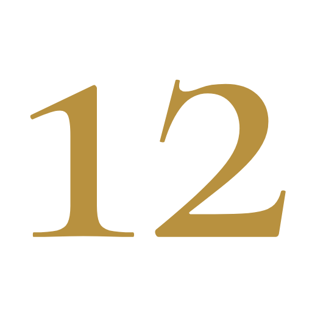

Symbol Grimoire
12
Divination Meaning
Otherworldly, mystical, meditative, visions, arcane knowledge.
Symbolism of Twelve
There are twelve calendar months in a year, twelve signs of the Zodiac that guard those months, twelve Apostles, twelve Tribes of Israel, and twelve Knights of the Round Table. As there are twelve months in the year, the hours of the day are also split into two sections of twelve. There were twelve Imperial symbols in China, these being the Sun, the Moon, a constellation of three stars, and a mountain, all of which represented features of the Universe, while a pair of dragons represented yang or male energy and a pheasant represented female yin energy. The rest of the symbols were millet for prosperity, waterweed for purity, a pair of bronze cups for strength and cleverness, and flames for intellectual prowess, while the axe symbolized Imperial power and the authority to punish, and the final symbol, the fu, was the power to judge.
In more recent years the European Union chose to put twelve stars on its flag. This has nothing to do with the number of member states but is an acknowledgement of something the ancients understood, that twelve is a number of perfection. This is because twelve is the result of four, the number of the elements, the cardinal points, and the corners of the Earth, multiplied by three, the number of the levels of the Universe and the aspects of any God, the multiplication of the number of the Earth with the number of the Heavens. In Africa this three by four equation is expressed in a myth in which each of the four points of the compass was whirled round three times, producing the sound of creation, which in turn formed the Cosmic Egg.
In the Tarot, twelve is the number of the Hanged Man, suspended from a rope by one foot, who has the time to contemplate his place in the larger Universe.